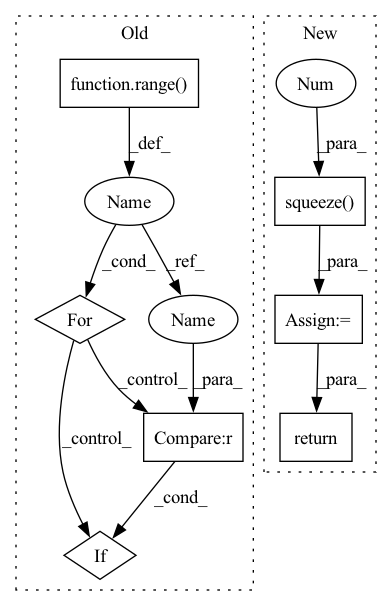

Pattern ID :33673
Before Change
return min_slot_id
def _find_free_cuda_slot(self) -> int:
for slot_idx in range( self.cuda_chunk_num):
if slot_idx not in self.cached_chunk_table :
return slot_idx
return -1
After Change
def _find_free_cuda_slot(self) -> int:
if self._cuda_available_chunk_num == 0:
return -1
candidates = torch.nonzero(self.cached_chunk_table[:, 0] == -1).squeeze(1 )
return candidates[0].item()
@torch.no_grad()
def _admit(self, chunk_id: int):In pattern: SUPERPATTERN
Frequency: 4
Non-data size: 7
Instances Fragment ID: 96917255
Project Name: hpcaitech/cachedembedding
Commit Name: 5b9995175361069d8eaa507674a59791f722761a
Time: 2022-07-26
Author: 34452939+zxgx@users.noreply.github.com
File Name: recsys/modules/embeddings/chunk_param_mgr.py
M Class Name: ChunkParamMgr
N Class Name: ChunkParamMgr
M Method Name: _find_free_cuda_slot(1)
N Method Name: _find_free_cuda_slot(1)
M Parent Class: object
N Parent Class: object
M File Name: recsys/modules/embeddings/chunk_param_mgr.py
N File Name: recsys/modules/embeddings/chunk_param_mgr.py
M Start Line: 244
M End Line: 247
N Start Line: 233
N End Line: 236
Before Change
y = self.fc_final(out) // batch_size * state_len * loc_size
score = F.log_softmax(y, dim=2)
// 因为是补齐了的，所以需要找到真正的 score
for i in range( score.shape[0]):
if i == 0 :
true_scores = score[i][loc_len[i] - 1].reshape(1, -1)
else:
true_scores = torch.cat(After Change
final_out_index = torch.tensor(origin_len) - 1
final_out_index = final_out_index.reshape(final_out_index.shape[0], 1, -1)
final_out_index = final_out_index.repeat(1, 1, 2*self.hidden_size).to(self.device)
out = torch.gather(out, 1, final_out_index).squeeze(1 ) // batch_size * (2*hidden_size)
out = self.dropout(out)
y = self.fc_final(out) // batch_size * loc_size
score = F.log_softmax(y, dim=1)
return score
def predict(self, batch):
return self.forward(batch) Fragment ID: 96917260
Project Name: libcity/bigscity-libcity
Commit Name: ec61c9cd984d1c86ee715380ed3b65b4222c8d1f
Time: 2021-05-06
Author: 33283819+WenMellors@users.noreply.github.com
File Name: trafficdl/model/trajectory_loc_prediction/DeepMove.py
M Class Name: DeepMove
N Class Name: DeepMove
M Method Name: forward(2)
N Method Name: forward(2)
M Parent Class: AbstractModel
N Parent Class: AbstractModel
M File Name: trafficdl/model/trajectory_loc_prediction/DeepMove.py
N File Name: trafficdl/model/trajectory_loc_prediction/DeepMove.py
M Start Line: 122
M End Line: 175
N Start Line: 152
N End Line: 163
Before Change
score = F.log_softmax(y, dim=2) // calculate loss by NLLoss
// 因为是补齐了的，所以需要找到真正的 score
loc_len = batch.get_origin_len("current_loc")
for i in range( score.shape[0]):
if i == 0 :
true_scores = score[i][loc_len[i] - 1].reshape(1, -1)
else:
true_scores = torch.cat(After Change
final_out_index = torch.tensor(origin_len) - 1
final_out_index = final_out_index.reshape(final_out_index.shape[0], 1, -1)
final_out_index = final_out_index.repeat(1, 1, self.hidden_size).to(self.device)
out = torch.gather(out, 1, final_out_index).squeeze(1 ) // batch_size * hidden_size
out = F.selu(out)
out = self.dropout(out)
y = self.fc(out)
score = F.log_softmax(y, dim=1) // calculate loss by NLLoss
return score
def predict(self, batch):
return self.forward(batch) Fragment ID: 96917258
Project Name: libcity/bigscity-libcity
Commit Name: ec61c9cd984d1c86ee715380ed3b65b4222c8d1f
Time: 2021-05-06
Author: 33283819+WenMellors@users.noreply.github.com
File Name: trafficdl/model/trajectory_loc_prediction/RNN.py
M Class Name: RNN
N Class Name: RNN
M Method Name: forward(2)
N Method Name: forward(2)
M Parent Class: AbstractModel
N Parent Class: AbstractModel
M File Name: trafficdl/model/trajectory_loc_prediction/RNN.py
N File Name: trafficdl/model/trajectory_loc_prediction/RNN.py
M Start Line: 87
M End Line: 97
N Start Line: 84
N End Line: 94
Before Change
return min_slot_id
def _find_free_cuda_slot(self) -> int:
for slot_idx in range( self.cuda_chunk_num):
if slot_idx not in self.cached_chunk_table :
return slot_idx
return -1
After Change
def _find_free_cuda_slot(self) -> int:
if self._cuda_available_chunk_num == 0:
return -1
candidates = torch.nonzero(self.cached_chunk_table[:, 0] == -1).squeeze(1 )
return candidates[0].item()
@torch.no_grad()
def _admit(self, chunk_id: int): Fragment ID: 96917257
Project Name: hpcaitech/freqcacheembedding
Commit Name: 5b9995175361069d8eaa507674a59791f722761a
Time: 2022-07-26
Author: 34452939+zxgx@users.noreply.github.com
File Name: recsys/modules/embeddings/chunk_param_mgr.py
M Class Name: ChunkParamMgr
N Class Name: ChunkParamMgr
M Method Name: _find_free_cuda_slot(1)
N Method Name: _find_free_cuda_slot(1)
M Parent Class: object
N Parent Class: object
M File Name: recsys/modules/embeddings/chunk_param_mgr.py
N File Name: recsys/modules/embeddings/chunk_param_mgr.py
M Start Line: 244
M End Line: 247
N Start Line: 233
N End Line: 236